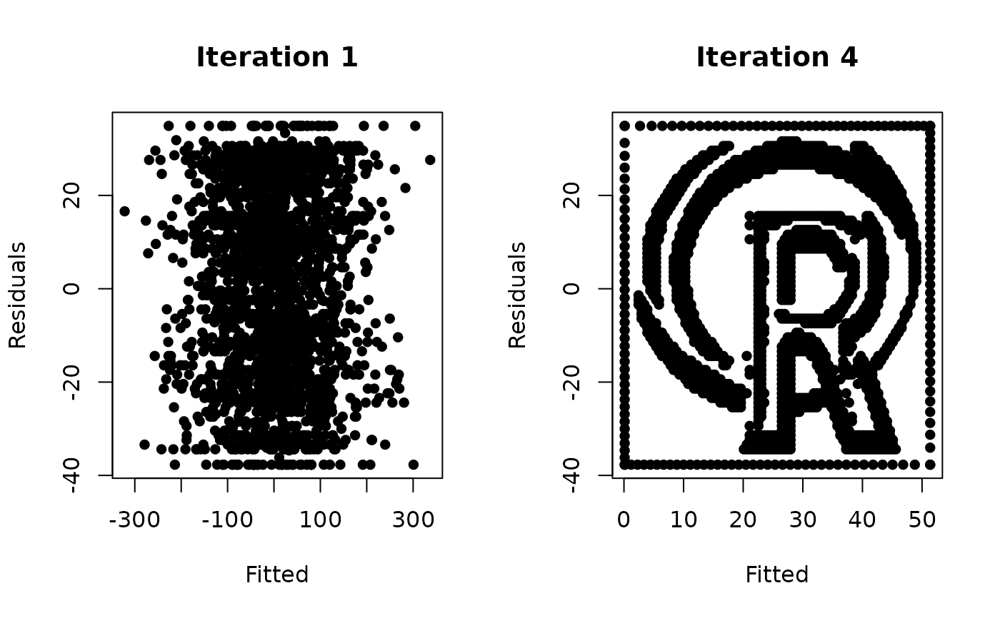
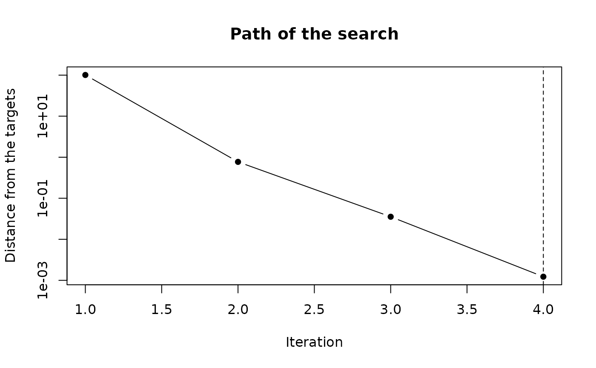

This function runs the same search as surreal() and keeps what it had at
every iteration, so the search can be plotted or played back. The data it
ends on is the data surreal() returns for the same seed.
Usage
surreal_trace(
data,
y_hat = data[, 1],
R_0 = data[, 2],
R_squared = 0.3,
p = 5,
n_add_points = 40,
max_iter = 100,
tolerance = 0.01,
step = 1
)Arguments
- data
A data frame or matrix with two columns representing the
y_hatandR_0values.- y_hat
Numeric vector of desired fitted values (only used if
datais not provided).- R_0
Numeric vector of desired residuals (only used if
datais not provided).- R_squared
Numeric. Desired R-squared value. Default is 0.3.
- p
Integer. Desired number of columns for matrix X. Default is 5.
- n_add_points
Integer. Number of points to add in border transformation. Default is 40.
- max_iter
Integer. Maximum number of iterations for convergence. Default is 100.
- tolerance
Numeric. Criteria for detecting convergence and stopping optimization early. Default is 0.01.
- step
Numeric. The fraction of its proposed update that each iteration takes, from above 0 to 1. The default of 1 is the step
surreal()takes. A smaller step slows the search down and gives more iterations to watch.
Value
An object of class surreal_trace, a list with:
- data
The data frame the search ended on.
- iterations
A data frame with a row for each iteration: its number, the
changeit proposed (whattoleranceis compared with) and thedistanceof the fitted values from their targets.- fitted
A matrix with a column of fitted values for each iteration.
- residuals
The residuals, which are the same at every iteration.
- target
The fitted values the search is aiming for.
- step
The step that was used.
- converged
Whether the search stopped because the change fell below
tolerance, rather than running out of iterations.
Details
The search starts from random predictors. The picture's vertical positions, the residuals, are exact from the first iteration: the predictors are built to be unrelated to them. The search moves the fitted values, the picture's horizontal positions. Each iteration rebuilds one predictor so that the fitted values land on their targets, which shifts the model slightly, so the next iteration corrects again. With the default step this settles in a handful of iterations.
Plotting the fitted values of an iteration against the residuals shows the
picture as it stood then, which plot() does.
See also
surreal() for the method itself.
Examples
set.seed(114)
trace <- surreal_trace(r_logo_image_data)
trace
#> <surreal_trace>
#> 4 iterations with a step of 1, converged
#> Fitted values began 101 from their targets and ended 0.00123 from them
# The picture at the first iteration, and where the search ended
oldpar <- par(mfrow = c(1, 2))
plot(trace, iteration = 1)
plot(trace)

par(oldpar)
# The distance of the fitted values from their targets, by iteration
plot(trace, type = "trace")

# A smaller step gives a longer search to watch
set.seed(114)
slow <- surreal_trace(r_logo_image_data, step = 0.25)
nrow(slow$iterations)
#> [1] 34